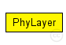
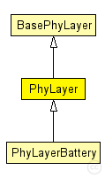

This documentation is released under the Creative Commons license
This documentation is released under the Creative Commons licensePhysical layer module which knows how to initialize the Deciders and AnalogueModels from the modules directory. See the classes documentation for details.
The following diagram shows usage relationships between types. Unresolved types are missing from the diagram. Click here to see the full picture.
The following diagram shows inheritance relationships for this type. Unresolved types are missing from the diagram. Click here to see the full picture.
| Name | Type | Description |
|---|---|---|
| BasePhyLayer | simple module |
Basic physical layer module. See the class "BasePhyLayer" documentation. |
| Name | Type | Description |
|---|---|---|
| PhyLayerBattery | simple module |
Extends PhyLayer module with power consumption support |
| Name | Type | Default value | Description |
|---|---|---|---|
| coreDebug | bool | false |
debug switch for core framework |
| recordStats | bool | false |
enable/disable tracking of statistics (eg. cOutvectors) |
| headerLength | int | 0 |
defines the length of the phy header (/preamble) |
| usePropagationDelay | bool |
Should transmission delay be simulated? |
|
| thermalNoise | double |
the strength of the thermal noise [dBm] |
|
| useThermalNoise | bool |
should thermal noise be considered? |
|
| analogueModels | xml |
Specification of the analogue models to use and their parameters |
|
| decider | xml |
Specification of the decider to use and its parameters |
|
| sensitivity | double |
The sensitivity of the physical layer [dBm] |
|
| maxTXPower | double |
The maximum transimission power of the physical layer [mW] |
|
| timeRXToTX | double | 0 | |
| timeRXToSleep | double | 0 |
Elapsed time to switch from receive to sleep state |
| timeTXToRX | double | 0 |
Elapsed time to switch from send to receive state |
| timeTXToSleep | double | 0 |
Elapsed time to switch from send to sleep state |
| timeSleepToRX | double | 0 |
Elapsed time to switch from sleep to receive state |
| timeSleepToTX | double | 0 |
Elapsed time to switch from sleep to send state |
| initialRadioState | int | 0 |
State the radio is initially in (0=RX, 1=TX, 2=Sleep) |
| radioMinAtt | double | 1.0 |
radios gain factor (attenuation) while receiving |
| radioMaxAtt | double | 0.0 |
radios gain factor (attenuation) while not receiving |
| nbRadioChannels | int | 1 |
Number of available radio channels. Defaults to single channel radio. |
| initialRadioChannel | int | 0 |
Initial radio channel. |
| Name | Value | Description |
|---|---|---|
| class | PhyLayer |
| Name | Direction | Size | Description |
|---|---|---|---|
| upperLayerIn | input |
from the MAC layer |
|
| upperLayerOut | output |
to the MAC layer |
|
| upperControlIn | input |
control from the MAC layer |
|
| upperControlOut | output |
control to the MAC layer |
|
| radioIn | input |
for sendDirect from other physical layers |
// Physical layer module which knows how to initialize the Deciders // and AnalogueModels from the modules directory. // See the classes documentation for details. simple PhyLayer extends BasePhyLayer { parameters: @class(PhyLayer); }
This documentation is released under the Creative Commons license